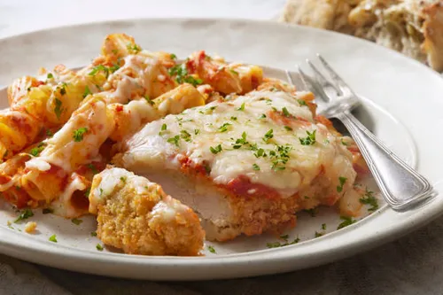

Parmesan Crusted Chicken
Description
This is Parmesan-crusted chicken with mayo is the simplest and most savoy way to dress up
chicken breasts for quick supper. Just topthem with mayonnaise, sprinkle with Parmesan cheese and bred crumbs, and bake. Dinner will be ready for 30 minutes or less.

Ingredients
- 1/2 cup Hellsman's mayo
- 1/4 cup grated Parmesan cheese
- 4 (5 onuce) boneless, skinless chicken breast halves
- 4 teaspoons Italian dry bread crumbs
Steps
- Preheat the oven to 425 degrees
- Mix mayo and Parmesan cheese together in a medium bowl until well combined.
- Arrange chicken breast on a baking sheet. Evenly top with mayo mixture then sprinkle with bread crumbs to coat.
- Bake in the preheated oven until golden on top and chicken is cooked through, about 20 minutes